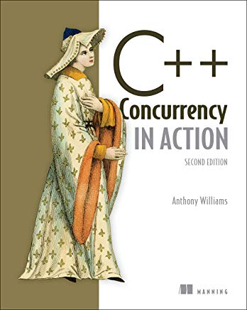

PARA COMENZAR...
Created by rmarku
Arquitectura del Software I
Contenidos
- Patrones de diseño (programación)
- Programación concurrente y paralelismo
- MVC - Framekorks - Programación WEB - HTTP
Patrones de diseño (programación)
 Libro:
Libro:Design patterns: elements of reusable object-oriented software
by Erich Gamma, Richard Helm, Ralph Johnson, John M. Vlissides
Programación concurrente - Tiempo real.
 Libro:C++ Concurrency in action
Anthony Williams
MVC - Framekorks - Programación WEB - HTTP
Muy practico
- Javascript - NodeJS (Sails.js, Meteor, Express)
- Python - Django
- PHP - Symphony
- U otro framework MVC
Distribución de clases
Lunes (teórico)
Patrones y despues paralelismoMartes (practico)
MVC - Framekorks - Programación WEB - HTTP(proyecto)
Distribución de clases
Patrones
Hay 23 patrones, en grupos de a 2 se elige un patron y se debe preparar:- Un informe
- Una presentación (20 min)
- Un video
MVC - Framekorks - Programación WEB
Proyecto
- Uno que uds propongan
- Uno propuesto para RSU
- Uno propuesto po mi 😈